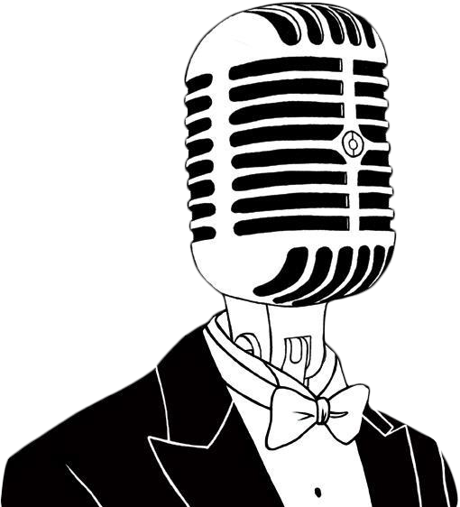

ARRANGEMENT
OPEN MIC
Radars Open Mic er scenen, hvor spirende kunstnere får mulighed for at vise deres talent. Uanset om du er musiker, digter eller stand-up-komiker, er dette stedet, hvor du kan dele din passion med et engageret publikum. Aftenen er uformel og inspirerende – perfekt for både nybegyndere og garvede performere.
